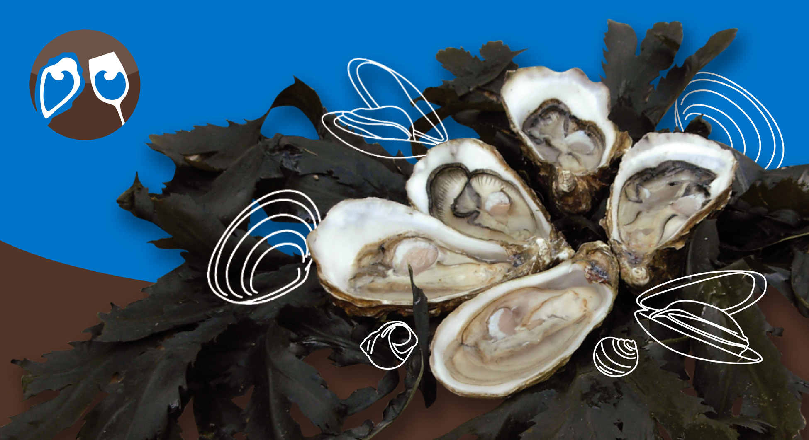
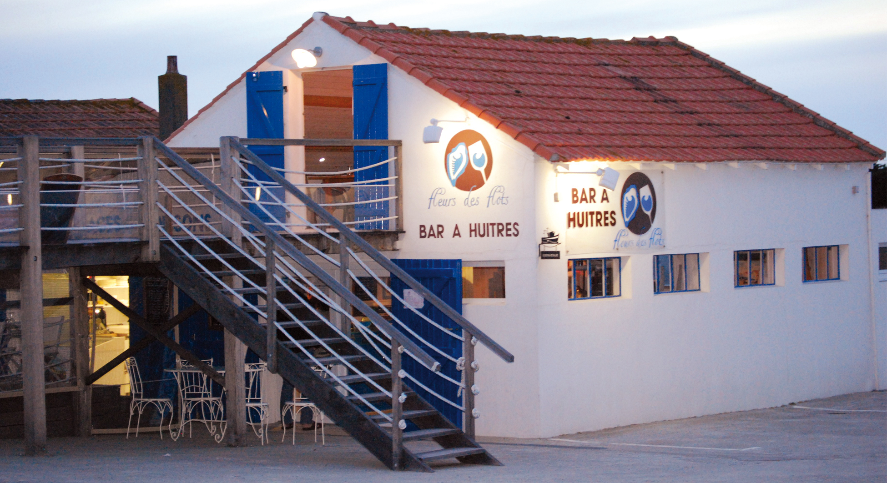
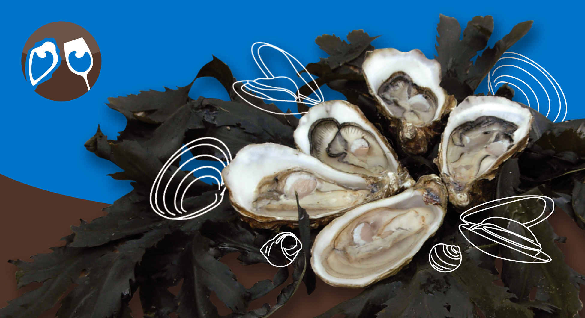
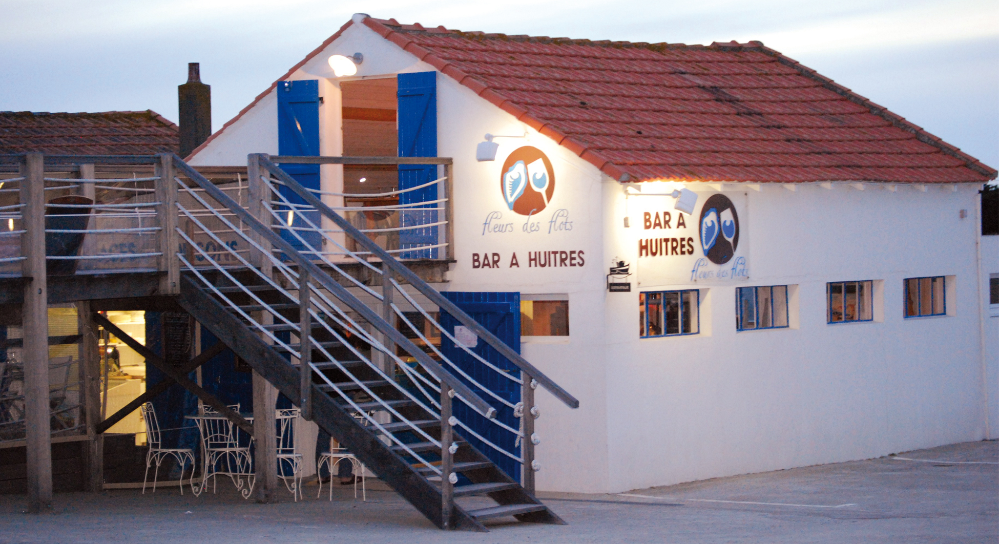

Idéalement positionné au Port des Brochets à Bouin. Découvrez nos assiettes d'huîtres, notre assiette de la mer, seiche, ou encore nos sardines de Saint-Gilles Croix-de-Vie et NOUVEAUTE 2016 PLATEAUX DE FRUITS DE MER sur réservation.